Problématique : quelles cellules constituent le cerveau et quels sont leurs rôles ?
Document A : complète les trois légendes. Document B : complète les cinq légendes.
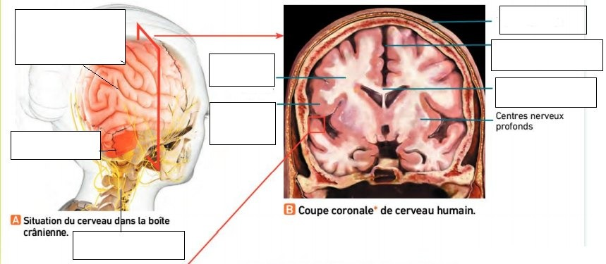
D'après le manuel de SVT Terminale, Bordas.
L'encéphale est formé du , du et du . Il est prolongé par la .
La substance grise se trouve et .
La substance blanche se trouve .
Document D : complète les quatre légendes du neurone pyramidal.
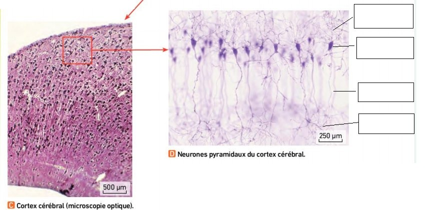
D'après le manuel de SVT Terminale, Bordas.
Au microscope, le cortex est organisé en plusieurs de neurones dits . Le cerveau contient environ de neurones.
D'après la vidéo et les documents, complète le tableau.
| Types de cellules | |||
|---|---|---|---|
| Caractéristiques | |||
| Rôle |
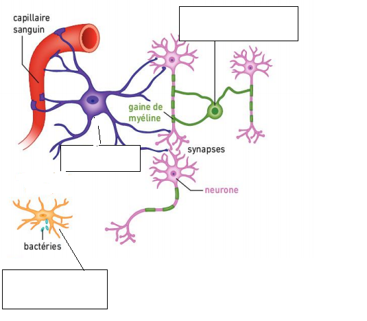
Les cellules nerveuses. Complète les trois légendes : astrocyte, oligodendrocyte, cellule de la microglie.
Schéma : document de l'activité.
Réponds à la problématique : quelles cellules constituent le cerveau et quels sont leurs rôles ?
Problématique : comment l'exploration du cortex permet-elle de situer les territoires du cerveau à l'origine de la motricité volontaire ?
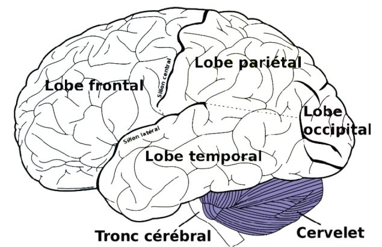
1234Étape 6. Nomme les quatre lobes (cases 1 à 4).
Étape 12 (après l'IRM). Colorie l'aire motrice primaire et marque d'une croix le territoire de la main.
Vue latérale de l'hémisphère gauche : l'avant du cerveau est à gauche.
Schéma 1 : document de l'activité.
Une stimulation électrique d'une zone précise de l'aire motrice primaire provoque .
Une lésion de cette zone provoque .
La carte du corps dessinée sur l'aire motrice primaire s'appelle .
Pourquoi la main occupe-t-elle un si grand territoire ?
1. L'IRM est un examen qui :
2. L'IRM permet l'exploration du corps en :
3. Les images obtenues permettent de faire :
| Plans de coupe | Type de coupe | Sens d'exploration : du… vers le… |
|---|---|---|
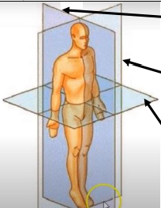 123Document de l'activité. | 1 | |
| 2 | ||
| 3 |
Écris le type de coupe de chaque image : axiale, coronale ou sagittale.
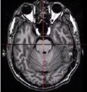
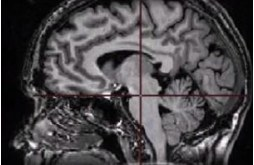
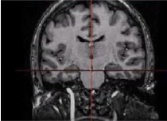
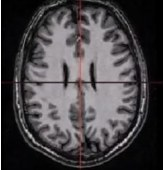
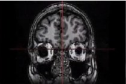
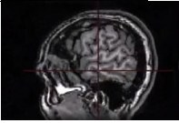
Images A à F et image des questions 6 et 7 : document de l'activité.
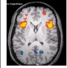
6. Cette image est obtenue par :
7. Il s'agit d'une coupe :
Pour chaque enregistrement, observe les zones activées sur la page de l'activité, puis complète le tableau.
| Enregistrement | Côté du corps qui bouge | Hémisphère activé | Lobe activé |
|---|---|---|---|
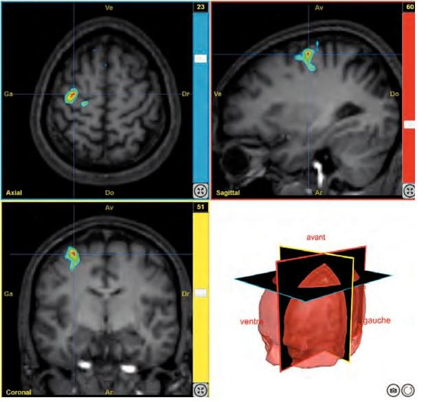 Manuel : main droiteD'après le manuel de SVT Terminale, Bordas. | |||
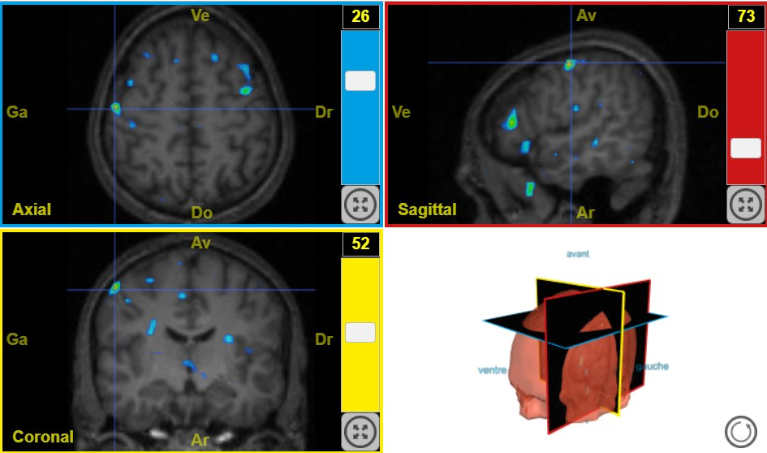 Sujet 13111 : main droiteCapture EduAnat2 (ENS de Lyon). | |||
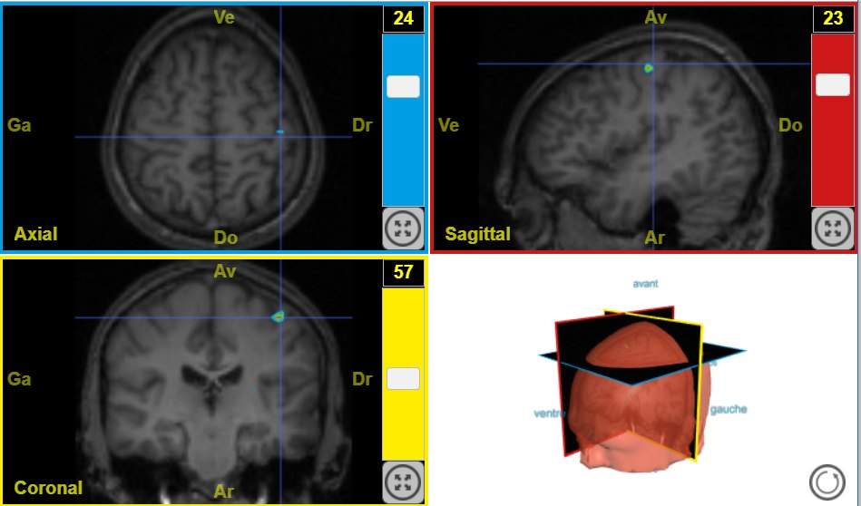 Sujet 13111 : main gaucheCapture EduAnat2 (ENS de Lyon). | |||
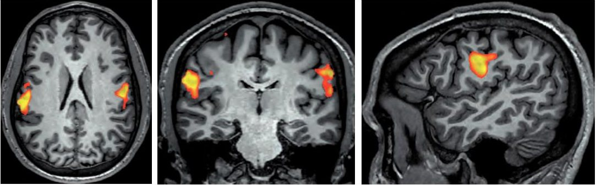 Manuel : langueD'après le manuel de SVT Terminale, Bordas. |
Interprétation. Mets en relation la région activée et la partie du corps qui bouge. Compare les régions activées chez les deux sujets pour un même mouvement.
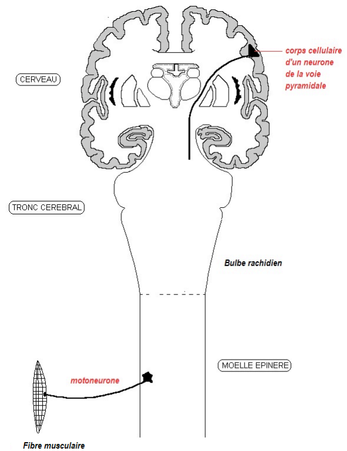
Schéma 2 : document de l'activité.
1. Complète la voie nerveuse qui commande une fibre musculaire d'un muscle de l'hémicorps gauche.
2. Représente en entier la voie qui commande une fibre musculaire de l'hémicorps droit.
Le faisceau de neurones qui commande les muscles des membres croise la ligne médiane juste en dessous du bulbe rachidien.
3. Pourquoi la commande des mouvements est-elle controlatérale ?
Réponds à la problématique de l'activité 2.
| Mouvement | Hémisphère activé | Comparaison avec le sujet 13111 |
|---|---|---|
| Main droite | ||
| Main gauche |
Documents : manuel de SVT Terminale (Bordas), documents de l'activité, captures du logiciel EduAnat2 (ENS de Lyon).
6/6